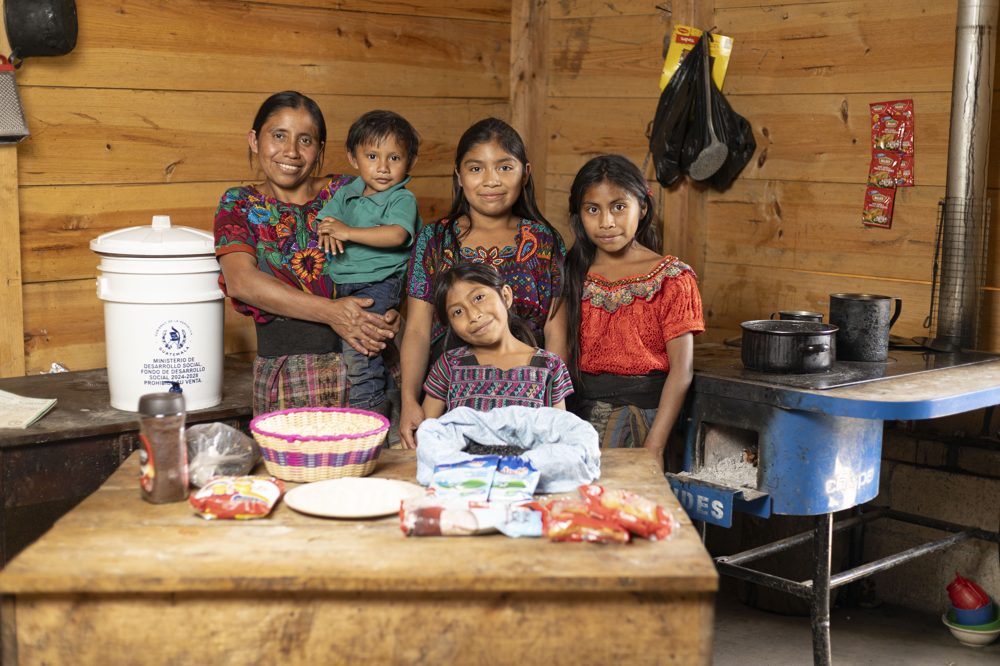
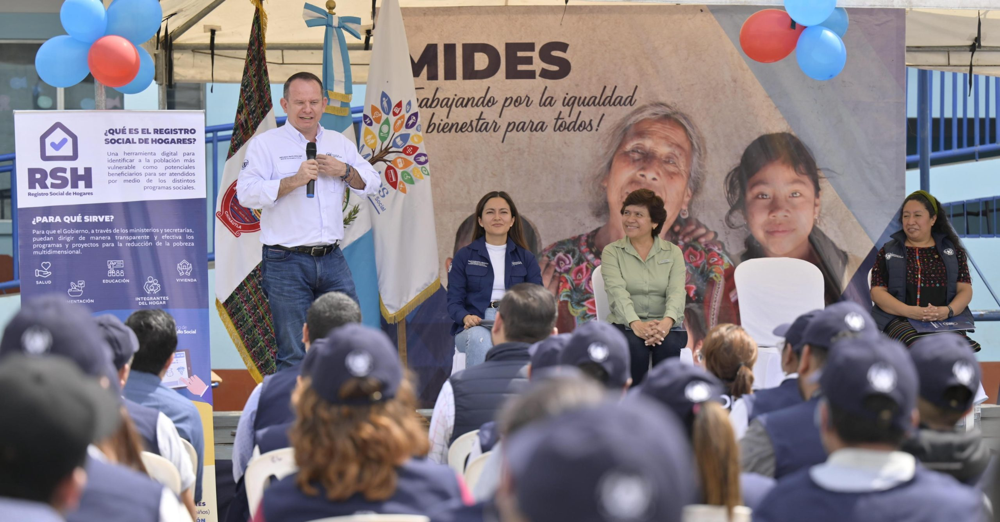

Al servicio del pueblo guatemalteco desde 2012
El desarrollo social es un proceso gradual y permanente para conseguir el bienestar de las personas, el cual conduce al mejoramiento de las condiciones de vida de toda la sociedad. Para ello se establecen distintos ámbitos de intervención, tales como: salud, educación, alimentación, vulnerabilidad, seguridad social, empleo y entretenimiento, entre otros.
Esto implica la dotación universal de una plataforma de servicios básicos orientados a mejorar las condiciones de vida de la población, para proveer de bienestar a toda una sociedad.
Actualmente, en varios países de Latinoamérica (incluyendo Guatemala) se han iniciado procesos de desarrollo mediante la asignación de instituciones públicas dedicadas exclusivamente a la rectoría, coordinación y articulación de la política pública en materia de desarrollo social y programas de protección.
Para cumplir con el objetivo de expandir los derechos sociales a todas las personas, en Guatemala se creó el Ministerio de Desarrollo Social —MIDES—, el cual trabaja en cinco programas sociales que incluyen y atienden a la población que vive en condición vulnerable, según sus necesidades particulares.

Somos una institución al servicio del Estado, la cual reconoce que las personas guatemaltecas merecen vivir en un país bajo un modelo de desarrollo social incluyente y participativo, que genera confianza e institucionaliza la política pública dirigida a proteger y dignificar la vida, generando oportunidades para que las personas puedan desarrollar sus capacidades desde los primeros años de vida.
Con el fin de institucionalizar los programas sociales a través de procesos transparentes durante la selección de usuarios, programación de atenciones, medición de corresponsabilidades y generación de capacidades para el desarrollo sostenible de las familias; el 7 de febrero de 2012 se crea el MIDES.
Fue denominado como ente rector, encargado de formular, dictar y establecer las políticas públicas orientadas a mejorar el nivel de bienestar de personas y grupos que son vulnerables socialmente. Esta institución pertenece al Organismo Ejecutivo y su naturaleza se define en el Decreto 1-2012, declarado de urgencia nacional.
El Ministerio está orientado a la atención de Derechos Humanos en general y de los Derechos Económicos, Sociales y Culturales en forma particular, considerando que muchas de las dificultades sociales se sustentan en carencias manifiestas dentro de la combinación de estos derechos.


Institución rectora de políticas públicas que mejorar el bienestar de personas vulnerables en pobreza, generando oportunidades y capacidades mediante alianzas con instituciones públicas, privadas y de la sociedad civil, en el marco de los derechos humanos.
Un país con un modelo de desarrollo social incluyente y participativo, que genere confianza e institucionalice la política pública dirigida a proteger a los más vulnerables, generando oportunidades para alcanzar una vida digna.
Las personas vulnerables desarrollan sus capacidades con dignidad. La sociedad se moviliza para apoyarlas. El MIDES lidera con confianza, demuestra resultados e invierte en las familias más necesitadas.
Gestión por resultados · Transparencia · Trabajo en equipo · Respeto a la diversidad · Reconocimiento del valor de la persona y la familia.